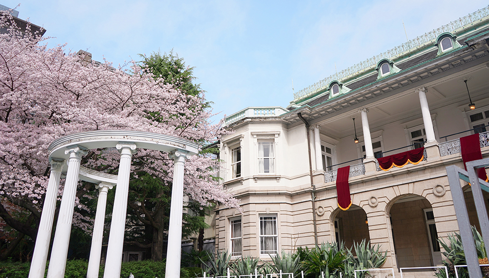
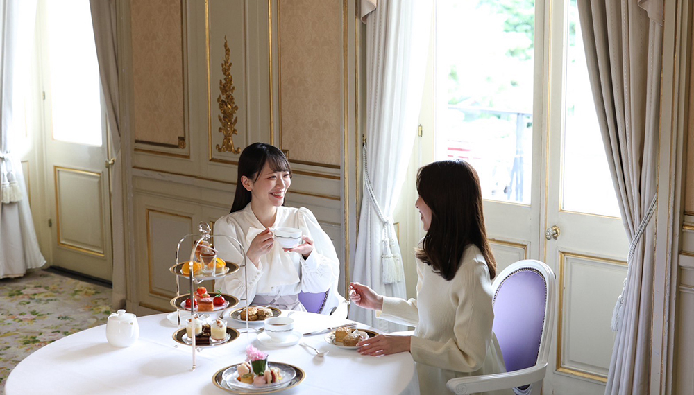
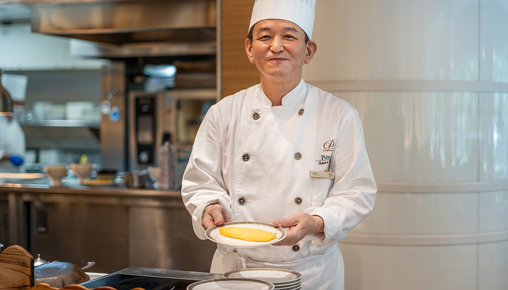
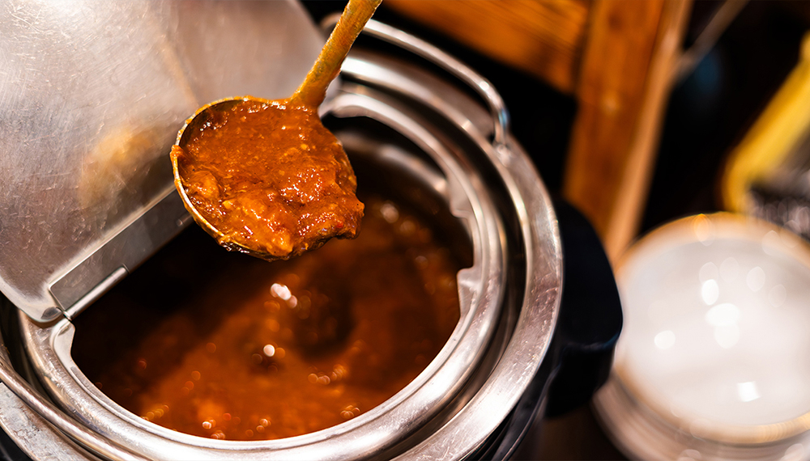

風流な月待ち体験
「高輪廿六夜（たかなわにじゅうろくや）」
-

- 
- 
江戸時代、見晴らしのよい高輪では、多くの人が集まり月の出を待ちながら、屋台での飲食を粋に愉しんでいました。「二十六夜待ち」と呼ばれ、複数の風景画に当時の様子が残されています。400個以上もの竹あかりに包まれた別世界の中、月待ちチェアに腰かけて月を見上げる神秘的な体験「高輪廿六夜（たかなわにじゅうろくや）」をお楽しみください。
氷と光の祭典

この冬、幻想的に灯る高輪廿六夜の竹あかりと、「光のモビール」と呼ばれるフィンランドの伝統工芸「ヒンメリ」を組み合わせたフォトスポットが日本庭園に登場。また、日付限定で当ホテルのアイスカービング職人たちが創る迫力ある氷彫刻も披露します。光と氷のコラボレーションをお楽しみください。
桜咲く貴賓館で
サステナブルなアフタヌーンティー


桜に囲まれた旧宮家の邸宅 貴賓館を舞台に、エシカルな食材を使用したアフタヌーンティーを味わいながら、まるで英国王室に招かれたようなラグジュアリーなひとときをお過ごしいただけます。規格外食材を使用したジャムや花の種が織り込まれたメニューカードなど未来へつながるお花見体験です。
日本庭園で楽しむ
「鯉の餌やり体験」
- 
- 
敷地内には約20,000㎡に渡る日本庭園があり、その中心に位置する池では、鯉の餌 やり体験をお楽しみいただけます。さわやかな風が流れる都心とは思えない絶景空間で、ゆったりとした高輪時間をお過ごしください。
日本庭園の緑を眺めながら、
心と体が満たされる、
ゆったりとした朝食タイムを。


グランカフェ パティオは、朝の陽光が降り注ぐ開放的なブッフェレストラン。
グランドプリンスホテル高輪のメインダイニング「フランス料理 ル・トリアノン」初代シェフが考案したプリンスホテルオリジナルカレーもお楽しみいただけます。
歴史的建造物がある敷地内で
タイムスリップ気分


高輪エリアのシンボルである明治44年竣工の旧宮家の邸宅「貴賓館」や、日本庭園内の港区の有形文化財「観音堂」・「鐘楼」など、敷地内には歴史的建造物が数多く点在しています。四季の移ろいが織りなす美しい情景に浸り、趣を感じる時間を過ごしてみては。